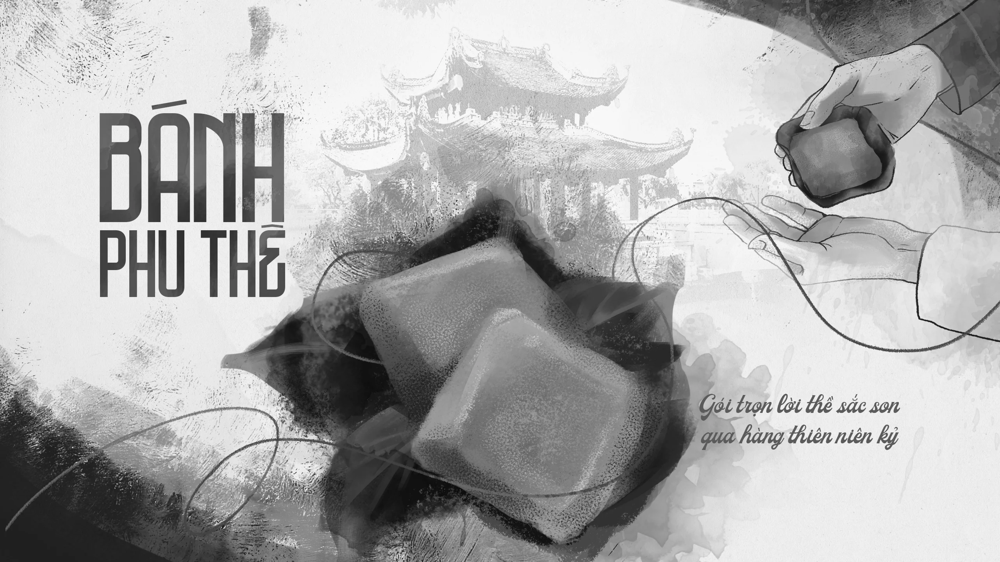
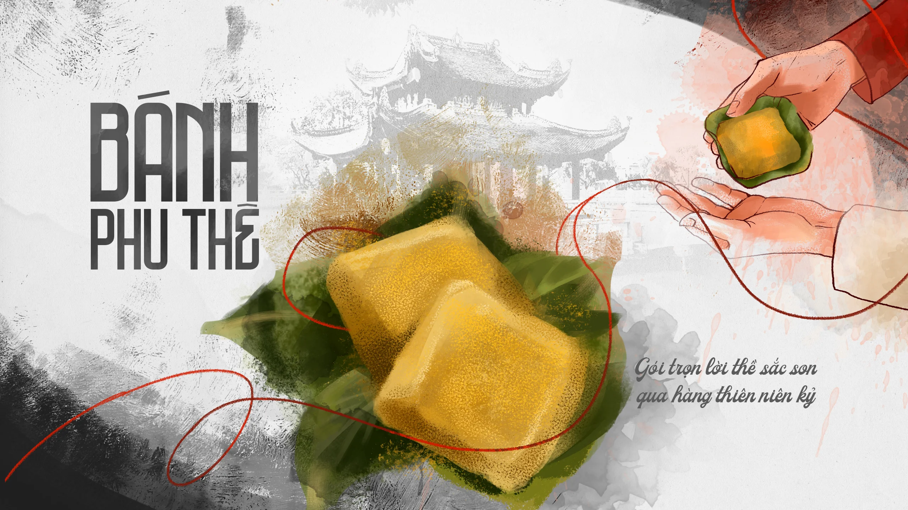
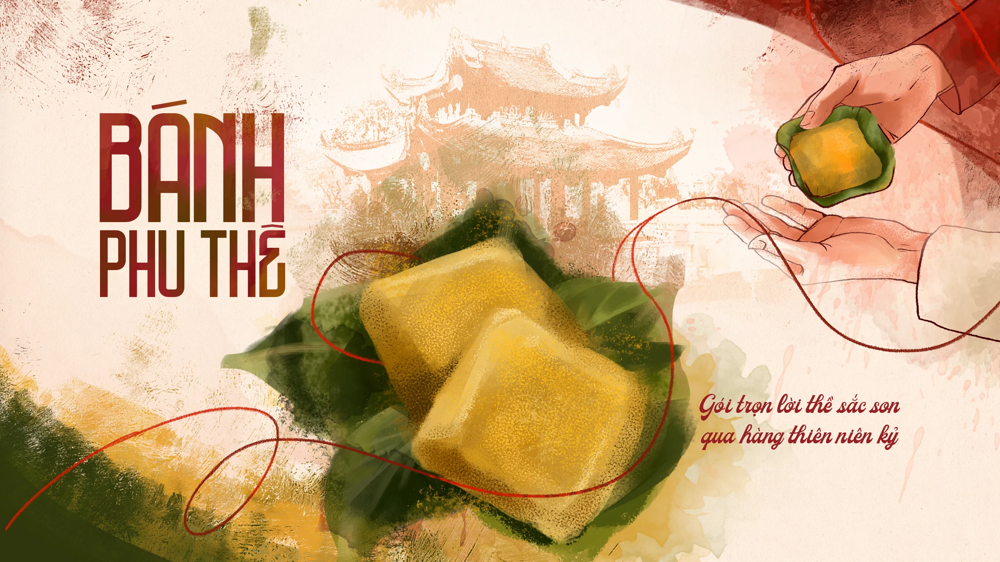
Bánh Phu Thê: Khi Lòng Thủy Chung Được Tạc Bằng Phong Vị
Từ miền đất Kinh Bắc, bánh phu thê đã trở thành biểu tượng của tình nghĩa vợ chồng và hạnh phúc lứa đôi. Như sợi tơ hồng âm thầm se kết những mối duyên lành, chiếc bánh mang theo khát vọng về sự thủy chung, gắn bó và viên mãn. Trải qua gần một thiên niên kỷ, thức quà nhỏ bé ấy vẫn lưu giữ những giá trị văn hóa truyền thống trong đời sống và tâm thức của người Việt.
.webp)

Vùng đất Kinh Bắc
Dưới bóng thâm nghiêm của những mái đền xứ Kinh Bắc, vùng đất Đình Bảng (Bắc Ninh) hiện ra như một dấu son trầm mặc của một vùng đất địa linh nhân kiệt. Người ta nhớ về nơi đây không chỉ như vùng đất phát tích của vương triều nhà Lý lừng lẫy trong lịch sử dân tộc, mà còn bởi một thức quà thanh nhã đã minh chứng cho tình cảm vợ chồng suốt hàng thế kỷ qua - bánh phu thê.

Từ điển tích cung đình…
Tục truyền, bánh phu thê gắn liền với giai thoại cảm động về tình nghĩa vợ chồng của vua Lý Anh Tông. Vào thế kỷ XII, khi đất nước có giặc ngoại xâm, nhà vua trực tiếp cầm quân ra trận. Ở lại kinh thành, hoàng hậu thương chồng vất vả đã tự tay làm nên món bánh gửi ra biên cương cho chồng. Chạm tay vào món quà từ hậu phương, cảm nhận vị ngọt bùi hòa quyện, nhà vua xúc động trước tấm chân tình của người vợ hiền mà đặt tên là bánh phu thê (hay còn gọi là bánh xu xê).
Cũng vì tên gọi ấy mà bánh phu thê luôn được buộc thành cặp, biểu trưng cho sự gắn bó son sắt của tình nghĩa vợ chồng.
…Đến nỗi lòng người vợ nơi bến sông
Bên cạnh điển tích cung đình, bánh phu thê còn được dân gian truyền tụng qua một dị bản khác, đời thường nhưng cũng đầy trắc trở về lòng thủy chung của cặp vợ chồng người lái buôn. Chuyện kể rằng, trước lúc người chồng lên đường đi buôn ở phương xa, người vợ làm bánh tặng chồng và thề rằng cho dù xa nhau, tình cảm vợ chồng vẫn một lòng không đổi. Người chồng cảm động đặt tên cho chiếc bánh là bánh phu thê. Chẳng ngờ ở phương xa, người chồng lạc bước trước những cám dỗ nơi xa xứ và không muốn quay về.
Người vợ ở nhà biết tin, liền làm bánh gửi cho chồng kèm theo lời nhắn:
“Từ ngày chàng bước xuống ghe
Sóng bao nhiêu đợt bánh rầu bấy nhiêu”.
Nhận được bánh và lời nhắn của vợ, người chồng hối hận, tức tốc quay về và chẳng còn nghĩ đến chuyện thay lòng đổi dạ. Từ đó, người đời truyền tai nhau rằng bánh phu thê tượng trưng cho sự thủy chung của vợ chồng và thường hay có mặt trong các lễ cưới như một lời nhắn nhủ đến các đôi vợ chồng trẻ.
...Lời ban truyền định danh cho hạnh phúc lứa đôi
Lại có một giai thoại khác mà người dân làng Đình Bảng vẫn thường nhắc lại. Vào thời Lý, mỗi dịp hội làng hay Tết đến, bà con thường làm bánh phu thê từ nông sản địa phương để thành tâm dâng cúng tổ tiên. Trong một lần về thăm quê để lễ tạ tại Đền Đô, vua Lý Thánh Tông và Nguyên phi Ỷ Lan đã có dịp thưởng thức món bánh đặc sản này.
Cảm mến hương vị thanh tao, lại thấu hiểu ý nghĩa nhân văn sâu sắc ẩn chứa trong sự hòa quyện giữa vỏ và nhân bánh, nhà vua đã ban chỉ rằng thức quà này chính là lễ vật phù hợp nhất để kết thành duyên mới. Tên gọi bánh phu thê cũng từ đó mà được xuất hiện, trở thành vật phẩm không thể thiếu trong nghi thức dẫn cưới của người Việt, mang theo khát vọng về một cuộc sống hôn nhân hạnh phúc, viên mãn.
Chứng nhân của hạnh phúc
Đi cùng năm tháng, bánh phu thê không chỉ đơn thuần là một thức quà truyền thống, mà đã trở thành biểu tượng của tình nghĩa vợ chồng sắt son. Giữa mâm tráp rực rỡ ngày đại hỷ, cặp bánh hiện diện như một chứng nhân thầm lặng, nhắc nhở đôi lứa về đạo nghĩa vợ chồng.
Gói sau lớp lá dong xanh và sợi lạt đỏ là cả một trời tâm tình, là lời chúc cho một đời bình an, để dù qua bao sóng gió, hai người vẫn mãi đồng lòng nhìn về một hướng.
Bánh phu thê - bình dị mà tinh tế
Nếu chỉ nhìn thoáng qua, chiếc bánh phu thê cũng bình dị như bao thức quà quê khác. Nhưng khi sợi lạt đỏ được tháo mở, lớp lá dong xanh tước đi để lộ phần bánh bên trong, người ta mới thực sự cảm nhận được sự tinh tế và khéo léo của những nghệ nhân Đình Bảng. Chiếc bánh ấy không chỉ là sự kết hợp hài hòa giữa các nguyên liệu, mà là một sự cân bằng hoàn hảo giữa thị giác và hương vị.
Để có được một mẻ bánh phu thê thành công, người làm bánh cần phải kỹ càng ngay từ khâu chọn lọc nguyên liệu. Lớp áo ngoài cùng là lá dong xanh mướt giữ vai trò bảo bọc, ấp ủ lấy lớp lá chuối lót bên trong. Ẩn dưới sự bảo bọc ấy là phần vỏ bánh có màu vàng, dẻo dai làm từ bột nếp cái hoa vàng và nước cốt quả dành dành. Nằm trong cùng là phần nhân đậu xanh, hạt sen sên đường mịn màng, điểm xuyết thêm những sợi dừa nạo trắng đan xen vào nhau.
Nhân đậu xanh tròn trịa nằm gọn trong lớp vỏ vuông vức, gợi nhắc về quan niệm "Trời tròn, Đất vuông" của người Việt. Hình vuông tượng trưng cho sự vững chãi, che chở của người chồng. Hình tròn đại diện cho sự vẹn toàn, tần tảo của người vợ. Sự hòa quyện này là lời chúc phúc cho một cuộc hôn nhân viên mãn, nơi âm dương thuận hòa, đất trời đồng điệu.
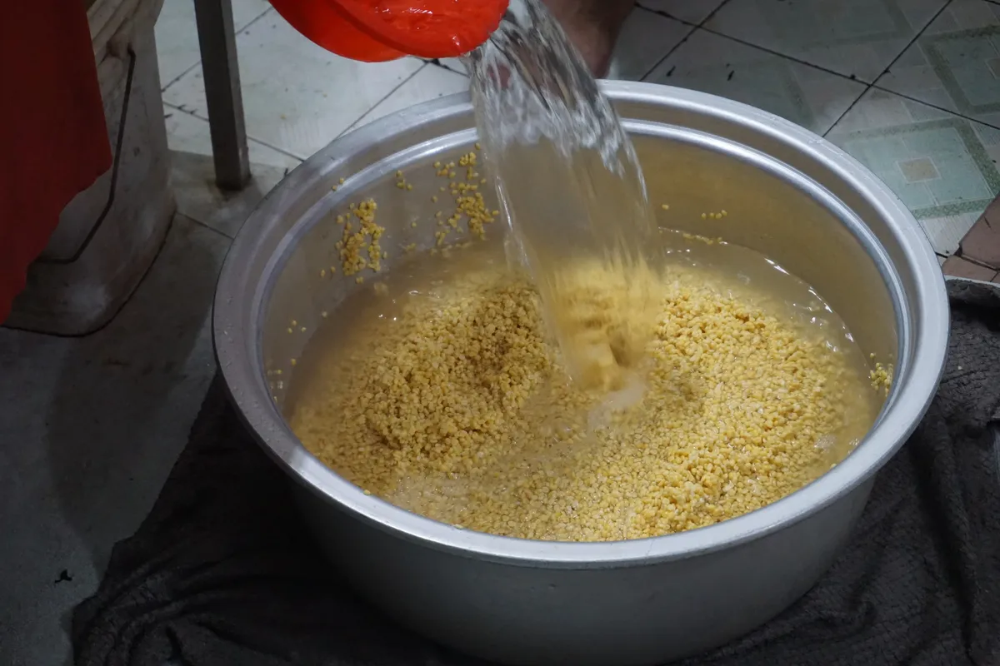
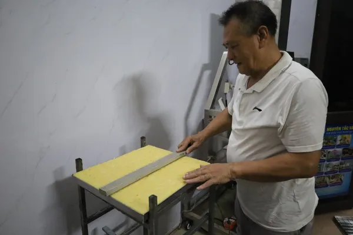
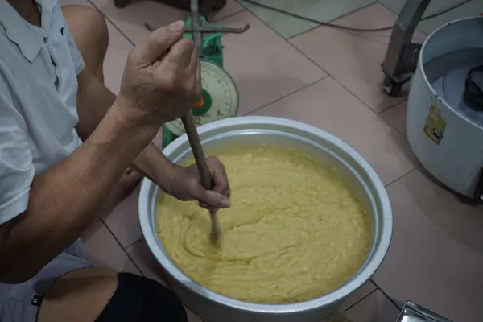
"Nguyên liệu làm bánh được chọn lọc và chuẩn bị một cách kỹ càng." (Nguồn: Tất Hiếu)
Để có những cặp bánh tươi ngon kịp trao tay khách trong ngày đại hỷ, những nếp nhà nghề ở Đình Bảng thường phải bắt đầu công việc từ lúc 3, 4 giờ sáng.

Người thợ không chỉ làm bánh bằng công thức, mà bằng cả sự nâng niu. Việc chờ nhân nguội, đợi bột trong, hay việc cẩn thận thắt từng sợi lạt hồng không chỉ là kỹ thuật, mà là cách người nghệ nhân gửi gắm sự trân trọng, chúc phúc cho tình yêu đôi lứa. Từng chiếc bánh được tạo ra mang vị ngọt của đường nếp, thấm đượm cả những giọt mồ hôi và tấm lòng sắt son của người thợ với nghề.
Sự tinh tế của các nguyên liệu còn được thể hiện thông qua sự cân bằng Ngũ hành trong triết học phương Đông. Mỗi nguyên liệu trong cặp bánh đều đại diện cho một nguyên tố, tạo nên sự cân bằng trong quy luật tương sinh, tương khắc của đất trời, từ đó biểu thị mong cầu cho đời sống hôn nhân thuận hòa của người Việt xưa.
✦ Chạm để cảm nhận ngũ hành ✦
Sinh sôi · Sức sống
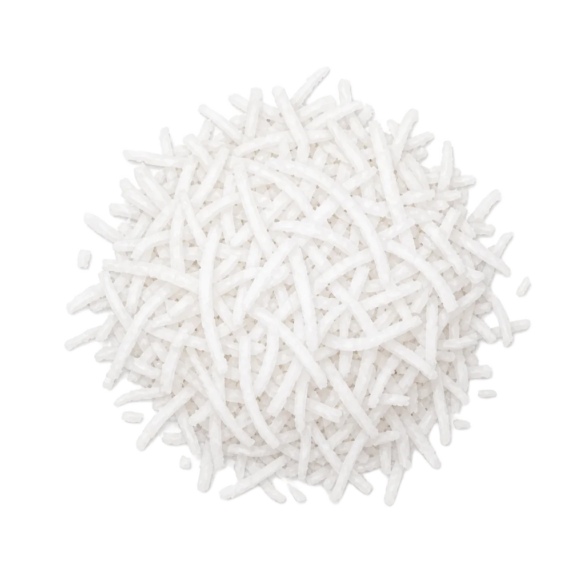
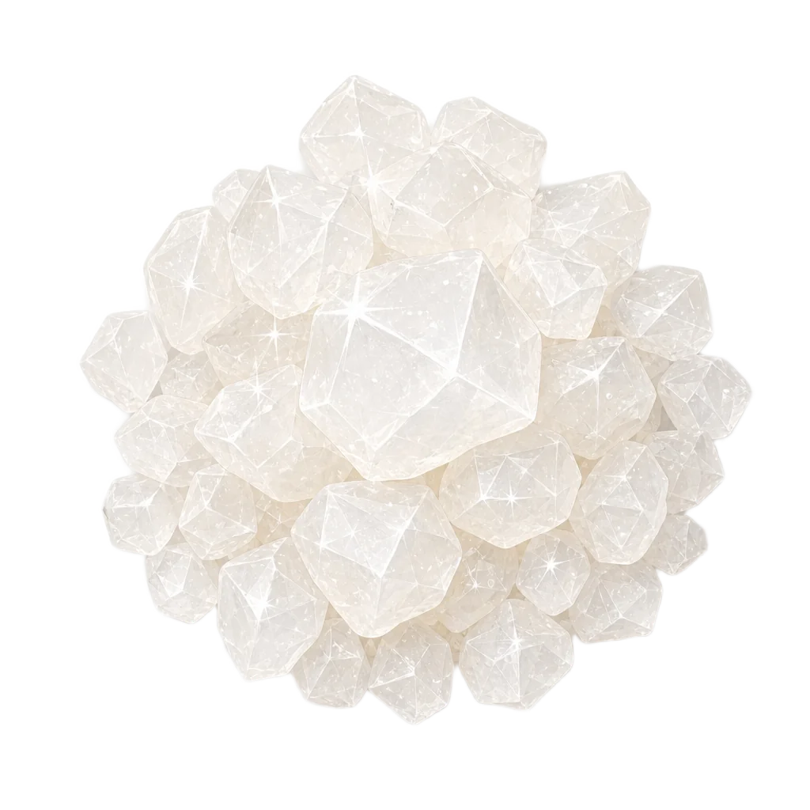
Tinh khiết · Thủy chung
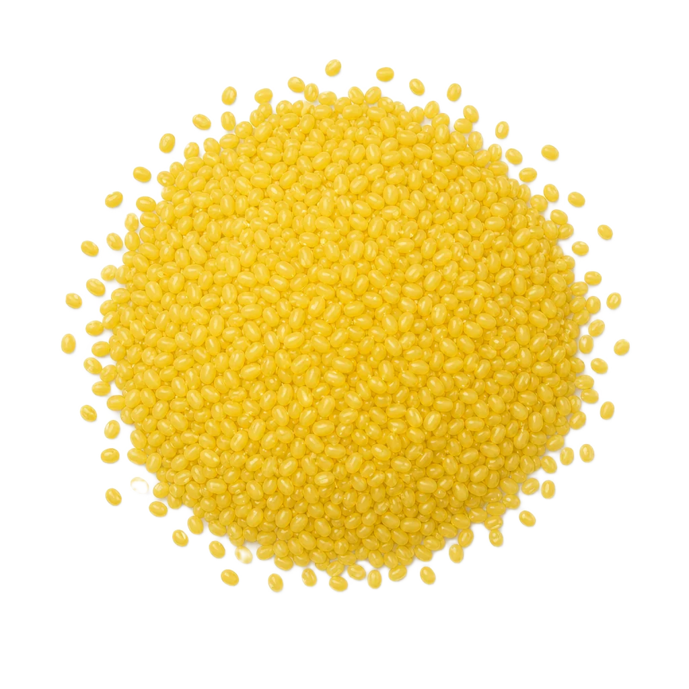
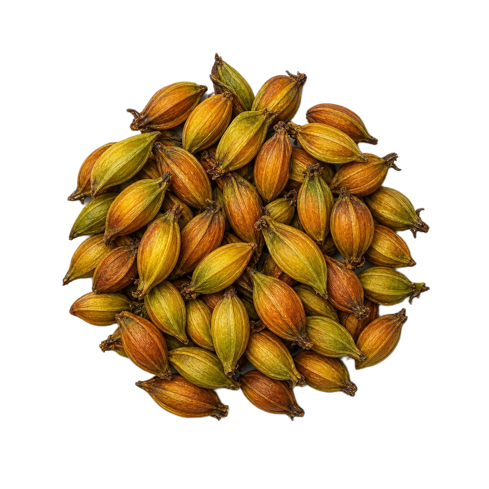
Ổn định · Ấm áp
Niềm vui · Gắn kết
Linh hoạt · Bền bỉ
✦ Ngũ Hành Viên Mãn ✦
Người Kinh Bắc không bao giờ bán lẻ bánh phu thê, bởi sính lễ hỏi cưới không bao giờ được phép đơn độc. Bánh phải đi theo cặp, úp bụng vào nhau và thắt chặt bằng sợi lạt đỏ. Đó là hình ảnh của âm dương giao hòa, của hai cá thể tuy riêng biệt nhưng đã được sợi dây tơ hồng buộc chặt để cùng gắn bó, sẻ chia cuộc đời cùng nhau. Ăn bánh phu thê không thể vội vã như những thức quà vặt ven đường. Người thưởng thức cần sự nhẫn nại để tháo lạt, tước lá, nhẹ nhàng khám phá phần bánh dẻo thơm. Đó cũng chính là sự nâng niu cần có trong đời sống vợ chồng. Sau khi đi qua những thử thách của thời gian, cái kết ngọt ngào nhất chính là vị ngọt bùi của sự thấu hiểu và sẻ chia. Cắn một miếng bánh phu thê, ta không chỉ thưởng thức một món ăn. Đó là một trải nghiệm đa giác quan: cái dẻo của bột nếp cái hoa vàng, cái bùi béo, ngọt ngào của phần của đậu xanh và hạt sen, cái sần sật của dừa nạo. Tất cả hòa quyện vào nhau tạo thành một hương vị nồng nàn và dịu ngọt, như có thể cảm nhận được tình nghĩa vợ chồng mà người Việt đã vun vén qua hàng bao thế hệ.
Để tạo nên một thức quà
trong veo như ngọc, dẻo dai như tình
Người thợ Đình Bảng phải trải qua quy trình chế biến công phu từ lúc trời còn chưa sáng. Trong từng công đoạn, từ khâu chọn nguyên liệu đến khi chiếc bánh được thành hình, không chỉ có kỹ thuật làm nghề mà còn chứa đựng những kinh nghiệm được tích lũy qua nhiều thế hệ và những quan niệm văn hóa đã ăn sâu vào đời sống của người dân vùng đất phát tích vương triều Lý.
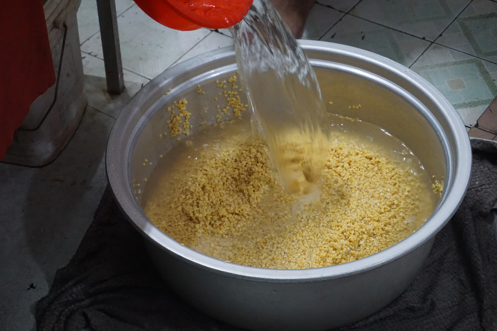
"Người thợ làm bánh phu thê tất bật chuẩn bị các nguyên liệu từ 3h sáng" (Nguồn: Ngọc Anh)
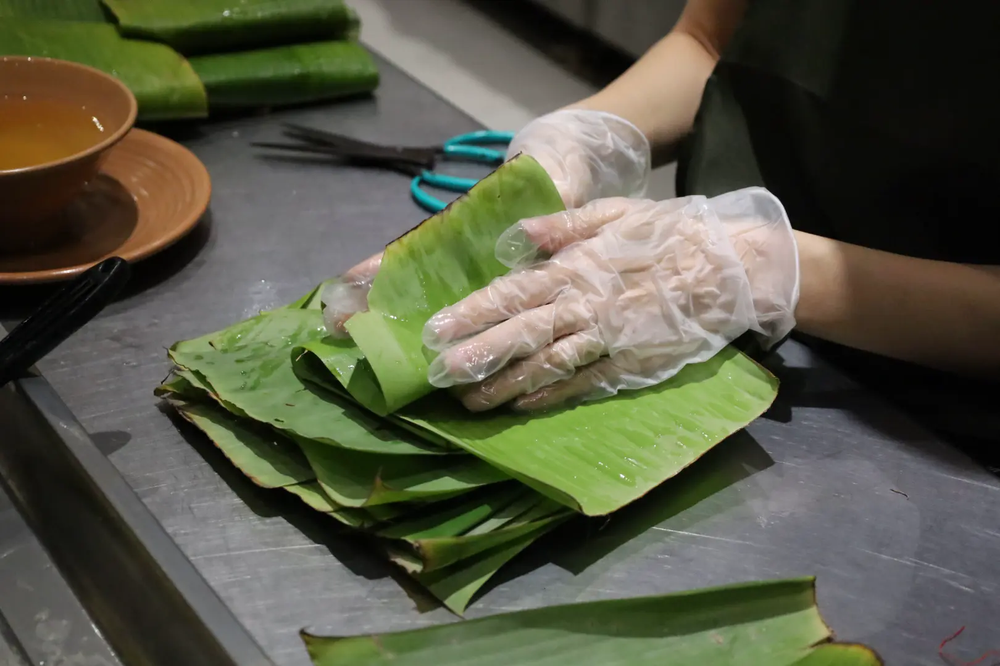
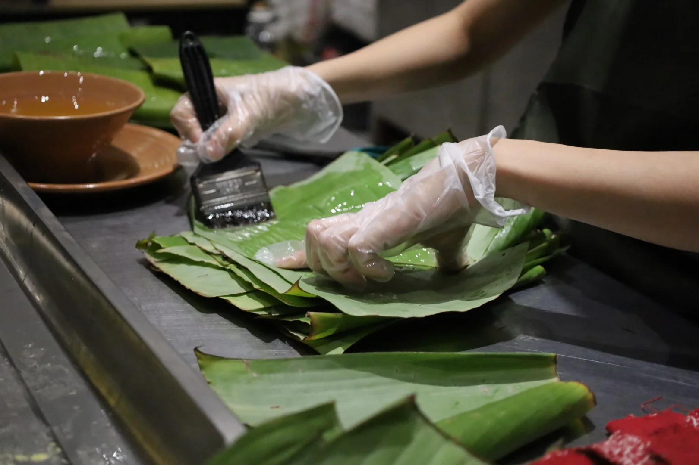
Công việc làm bánh thường bắt đầu từ ba giờ sáng. Khi mọi người còn đang say giấc, những người thợ làm bánh đã tất bật chuẩn bị nguyên liệu và chế biến nhân cho một mẻ bánh mới. Người làm nghề quan niệm rằng muốn có chiếc bánh ngon trước hết phải có nguyên liệu tốt. Từ xa xưa, các cụ thường lựa chọn nếp cái hoa vàng để làm bánh bởi độ thơm và độ dẻo đặc biệt, ngày nay nhiều gia đình chuyển sang sử dụng nếp nhung nhưng vẫn giữ nguyên tiêu chuẩn khắt khe trong việc chọn gạo. Đỗ xanh phải là loại đỗ bở, thơm, đường phải là đường mía để tạo vị ngọt thanh, đu đủ xanh phải đạt độ già vừa phải để giữ được độ giòn khi hòa quyện cùng lớp bột. Sự kỹ lưỡng ấy không đơn thuần là yêu cầu nghề nghiệp. Với người Đình Bảng, bánh phu thê từ lâu đã là lễ vật xuất hiện trong những dịp trọng đại của đời người. Bởi vậy, việc lựa chọn nguyên liệu cũng giống như sự chuẩn bị cho một lời chúc phúc gửi tới đôi uyên ương. Một chiếc bánh ngon phải bắt đầu từ những nguyên liệu tốt nhất, cũng như một cuộc hôn nhân bền vững cần được xây dựng từ sự chân thành và chu đáo ngay từ những điều nhỏ nhất.
"Công đoạn làm vỏ bánh được thực hiện vô cùng tỉ mỉ" (Ảnh: Tất Hiếu)
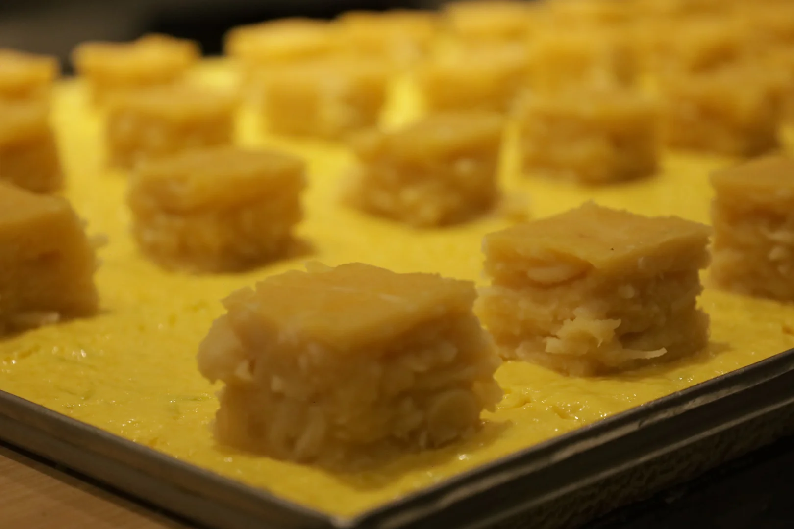
"Nhân bánh khi đã hoàn thiện" (Nguồn: Ngọc Anh)
Điểm đặc biệt làm nên bản sắc riêng của bánh phu thê Đình Bảng nằm ở lớp vỏ vàng trong đặc trưng. Đây cũng là một trong số ít loại bánh truyền thống của Việt Nam sử dụng đu đủ xanh như nguyên liệu quan trọng trong phần vỏ bánh. Đu đủ xanh sau khi gọt vỏ được nạo thành những sợi nhỏ, bóp sạch nhựa rồi trộn cùng bột nếp. Trong quá trình nhào bột, người thợ thêm nước cốt quả dành dành để tạo màu vàng tự nhiên. Khi hấp chín, lớp vỏ chuyển sang sắc vàng trong óng ánh, để lộ những sợi đu đủ vàng đan xen bên trong như những sợi tơ mảnh.
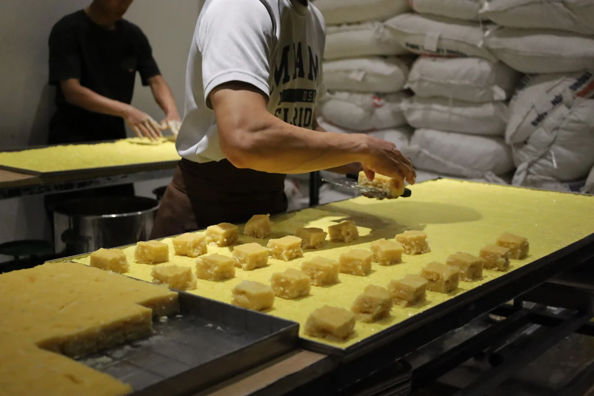
"Nhân bánh khi đã hoàn thiện" (Nguồn: Ngọc Anh)
Theo cách lý giải của những người làm nghề, hình ảnh ấy gợi liên tưởng đến "sợi tơ hồng" trong văn hóa dân gian - biểu tượng cho duyên phận và sự gắn kết giữa đôi lứa. Không chỉ vậy, sắc vàng tự nhiên của dành dành còn gợi cảm giác ấm áp, sung túc và hạnh phúc. Chính bởi những lớp nghĩa biểu tượng ấy mà chiếc bánh phu thê từ lâu đã trở thành hình ảnh quen thuộc trong các nghi lễ cưới hỏi của người Việt.
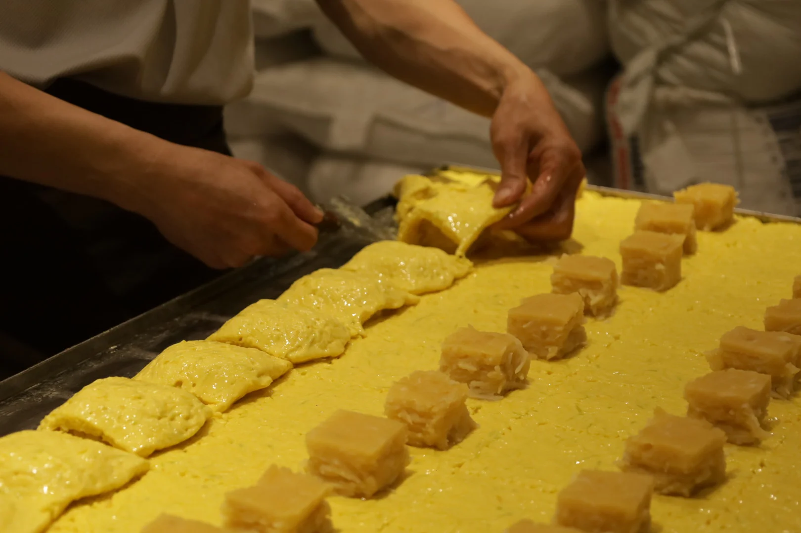
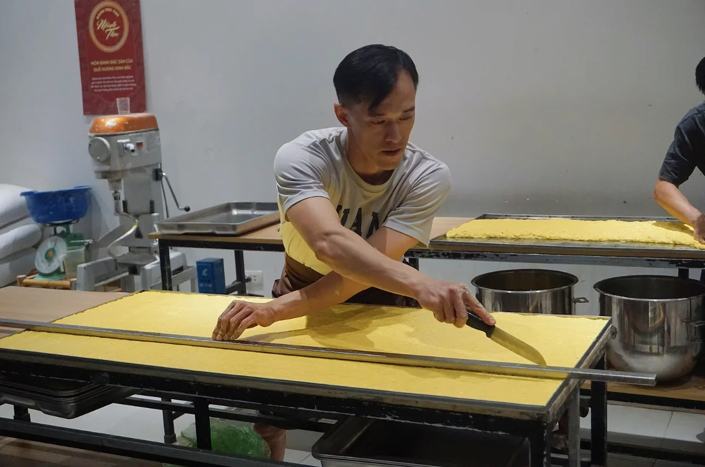
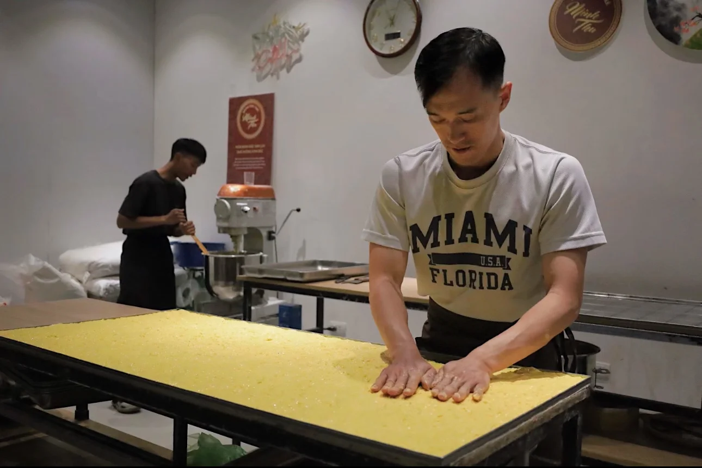
"Giai đoạn ủ bột và nặn bánh kỳ công nhất trong toàn bộ quy trình" (Nguồn: Ngọc Anh)
Công đoạn kỳ công nhất trong toàn bộ quy trình chính là ủ bột và nặn bánh. Đây là khâu quyết định độ trong, độ dẻo cũng như hình thức của thành phẩm.
Nhấn để xem video
Muốn tạo ra được lớp vỏ vàng trong đặc trưng, lượng nước cốt dành dành trong quá trình ủ bột phải được căn chỉnh chính xác. Nếu quá nhiều, màu bánh sẽ đậm và mất đi sự thanh nhã. Nếu quá ít, chiếc bánh sẽ không đạt được sắc vàng trong vốn là dấu hiệu nhận biết của bánh phu thê Đình Bảng. Sau khi ủ, bột tiếp tục được đánh và nhào kỹ. Người thợ phải điều chỉnh lượng nước vừa đủ để bột không quá mềm nhưng cũng không quá cứng. Đây là công việc gần như không thể đo đếm hoàn toàn bằng công thức. Mọi kinh nghiệm đều được tích lũy qua năm tháng và truyền lại bằng quá trình thực hành thực tế. Khi bột đạt yêu cầu, người thợ giàn bột đều trên khay rồi đặt nhân vào giữa. Lớp bột phải được trải đều tay, không chỗ dày chỗ mỏng. Sau đó, nhân được bọc kín trong lớp vỏ và nặn thành hình vuông vắn đặc trưng. Có lẽ chính ở công đoạn này, nghề làm bánh không còn đơn thuần là lao động thủ công mà trở thành một diản sống. Mỗi chiếc bánh vuông vắn, cân đối là kết tinh của sự khéo léo, kinh nghiệm và tình yêu nghề được truyền từ thế hệ này sang thế hệ khác.

"Bánh phu thê được hoàn thiện và xếp ngay ngắn vào xửng hấp" (Nguồn: Ngọc Anh)
Sau khi được tạo hình, những chiếc bánh được xếp ngay ngắn vào xửng hấp. Dưới làn hơi nóng, lớp bột dần chuyển sang màu vàng trong óng ánh. Qua lớp vỏ ấy, phần nhân vàng bùi cùng những sợi đu đủ hiện lên rõ nét, được gói ghém bên trong. Khi phần bánh được hoàn thiện hoàn toàn, người thợ tiếp tục gói chiếc bánh vào từng lớp lá chuối, lá dong rồi buộc lại bằng những sợi lạt mảnh. Theo cách cảm nhận của người dân Đình Bảng, những sợi lạt ấy mang ý nghĩa quấn quanh chiếc bánh như sợi dây kết nối hai con người trong đời sống hôn nhân, gợi nhắc về sự gắn bó, thủy chung và trách nhiệm cùng nhau vun đắp mái ấm gia đình.
Và để giữ trọn vẹn cái tình, cái nghĩa gói ghém trong thức quà ấy, việc bảo quản bánh cũng cần sự tinh tế như chính cách nó được làm ra. Bánh phu thê ngon nhất là khi được thưởng thức trong vòng một đến hai ngày đầu ở nơi thoáng mát, khi hương lá vẫn còn nồng nàn và lớp vỏ bột lọc giữ được độ dẻo dai tự nhiên. Nếu muốn níu giữ hương vị ấy lâu hơn, có thể bao bọc bánh thật kỹ trong ngăn mát tủ lạnh để tránh hơi lạnh làm khô đi lớp vỏ thanh tao. Khi dùng, chỉ cần mượn chút hơi ấm từ xửng hấp hay lò vi sóng, lớp bột sẽ từ từ trở nên trong veo và mềm mượt như thuở mới ra lò. Tuy nhiên, bởi bánh là kết tinh của những nguyên liệu thuần túy không chất bảo quản, nên nếu thấy hương đã phai hay vị đã đổi, ta cũng nên dừng lại để dư âm về món bánh này luôn vẹn nguyên sự ngọt ngào và thanh khiết.
Nhấn để xem video
Thành Phẩm
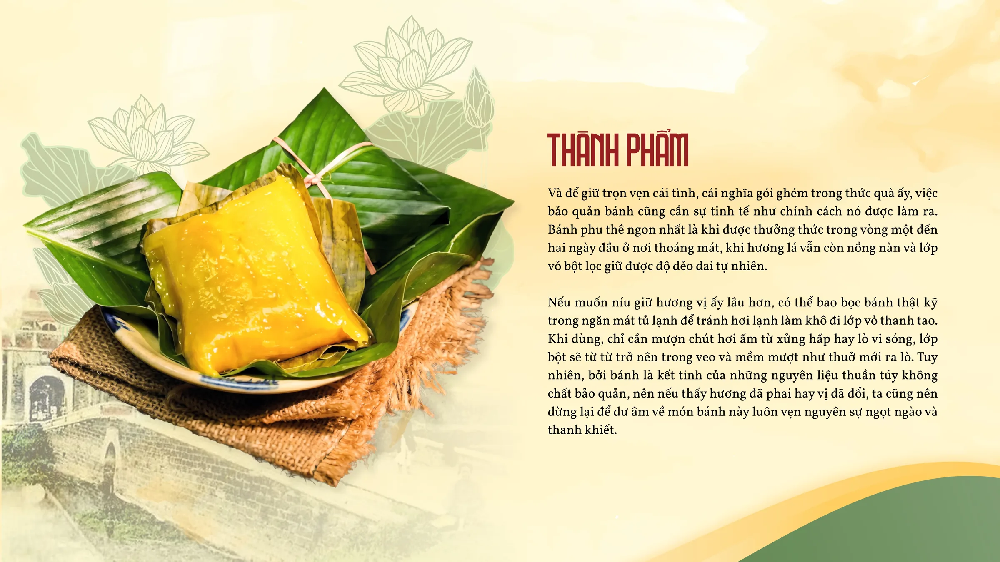
Trăm năm vẫn trọn nét duyên lành
Dù trải qua nhiều biến động của thời gian, bánh phu thê vẫn giữ nguyên những giá trị văn hóa và tinh thần cốt lõi gắn với tình yêu, hôn nhân và hạnh phúc gia đình của người Việt. Từ lâu, bánh phu thê đã vượt ra khỏi khuôn khổ của một món ăn thông thường để trở thành một biểu tượng văn hóa gắn bó sâu sắc với đời sống tinh thần của người Việt. Trong ký ức của nhiều thế hệ, chiếc bánh không chỉ hiện diện như một phần không thể thiếu trên mâm cỗ hay trong những dịp lễ trọng, mà còn là hiện thân của những quan niệm truyền thống về tình yêu, hôn nhân và gia đình. Đặc biệt, trong các nghi lễ cưới hỏi, bánh phu thê luôn giữ một vị trí trang trọng trong mâm tráp như lời chúc phúc gửi tới đôi uyên ương về cuộc sống hôn nhân viên mãn, thủy chung và bền chặt. Từ vùng quê Kinh Bắc đến nhiều địa phương khác trên khắp cả nước, hình ảnh những cặp bánh phu thê xuất hiện trong lễ ăn hỏi đã trở thành một nét quen thuộc, phản ánh quan niệm lâu đời của người Việt rằng hôn nhân chính là sự kết hợp của hai con người, là sự gắn kết của hai gia đình, hai dòng họ và những giá trị được trao truyền qua nhiều thế hệ.
Không phải ngẫu nhiên mà người xưa lựa chọn bánh phu thê giữa vô số loại bánh dân gian khác để trở thành lễ vật hôn nhân. Ngay từ tên gọi "phu thê", chiếc bánh đã mang trong mình một thông điệp son sắt về tình nghĩa vợ chồng. Đó là sự đồng hành, gắn bó và sẻ chia suốt cuộc đời. Mỗi chi tiết của chiếc bánh đều được người xưa gửi gắm những lớp nghĩa biểu tượng sâu sắc. Lớp vỏ trong suốt ôm lấy phần nhân vàng bên trong gợi nên hình ảnh của sự hòa hợp và bao bọc, như cách hai con người cùng che chở, nâng đỡ nhau xây dựng một mái ấm. Những sợi đu đủ vàng đan xen trong lớp bột dẻo trong không chỉ tạo nên vẻ đẹp thị giác mà còn gợi liên tưởng đến những sợi tơ hồng se duyên, kết nối hai số phận thành một. Hình dáng vuông vắn của chiếc bánh tượng trưng cho sự đầy đủ, trọn vẹn và ổn định, trong khi màu vàng óng của nhân đỗ xanh gợi nhắc đến sự sung túc, ấm no. Ngay cả những sợi lạt buộc bên ngoài chiếc bánh cũng được nhiều nghệ nhân lý giải như biểu tượng của sợi dây nghĩa tình, nhắc nhở vợ chồng luôn biết giữ gìn sự gắn bó và thủy chung trong cuộc sống hôn nhân. Từ lớp vỏ, phần nhân cho đến cách gói bánh trong lá dong xanh mộc mạc, mỗi yếu tố đều góp phần tạo nên một chỉnh thể giàu tính biểu tượng, khiến chiếc bánh trở thành một lời chúc phúc được thể hiện bằng hình hài cụ thể và sinh động.
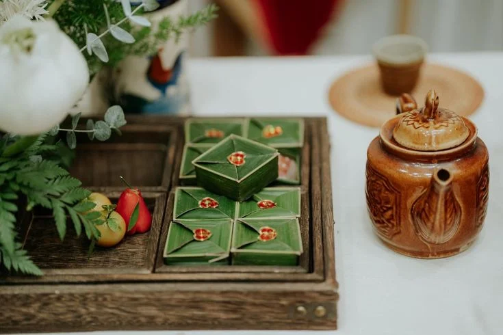
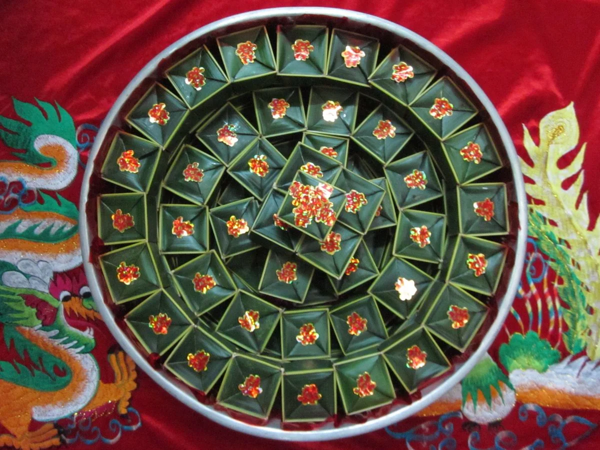
Bánh phu thê xuất hiện trong tráp cưới (Nguồn: Sưu tầm)
Bởi vậy, trong tâm thức người Việt, bánh phu thê không đơn thuần là một món ăn mà còn là biểu tượng hữu hình của hạnh phúc lứa đôi. Sự hiện diện của chiếc bánh trong mâm tráp cưới chính là cách các thế hệ gửi gắm niềm tin vào một cuộc hôn nhân viên mãn và lâu bền. Khi trao đi cặp bánh phu thê, người ta cũng đồng thời trao đi những mong ước tốt đẹp nhất dành cho đôi vợ chồng trẻ: sự hòa thuận trong đời sống gia đình, sự thủy chung trong tình cảm, sự cảm thông trong những lúc khó khăn và sự đồng hành trên chặng đường dài phía trước. Chính bởi mang trong mình nhiều tầng ý nghĩa như vậy, bánh phu thê đã vượt lên trên giá trị vật chất để trở thành một biểu tượng văn hóa được gìn giữ qua nhiều thế hệ.
Vẹn tình xưa trong nếp bánh tân thời
Giữa dòng chảy không ngừng của thời gian, chiếc bánh vẫn giữ được vị trí đặc biệt trong đời sống người Việt. Từ Bắc Ninh, chiếc bánh theo chân người dân đến nhiều vùng miền trên cả nước. Ở miền Bắc, người ta quen gọi là bánh phu thê - cái tên gắn trực tiếp với ý nghĩa vợ chồng hòa hợp. Trong khi đó, tại nhiều địa phương miền Trung và miền Nam, chiếc bánh lại được biết đến với tên gọi xu xê hay xu xuê, cách phát âm đã thay đổi dần theo thời gian. Sự khác biệt ấy phần nào phản ánh quá trình bản địa hóa ngôn ngữ để phù hợp với giọng nói và thói quen giao tiếp của từng vùng miền. Dù tên gọi có đôi chút khác nhau, hình ảnh cặp bánh tượng trưng cho sự gắn bó và đồng lòng của lứa đôi vẫn được gìn giữ nguyên vẹn. Chính sự đa dạng trong cách gọi đã cho thấy sức lan tỏa mạnh mẽ của thức quà này trong đời sống văn hóa của người Việt trên khắp ba miền đất nước.
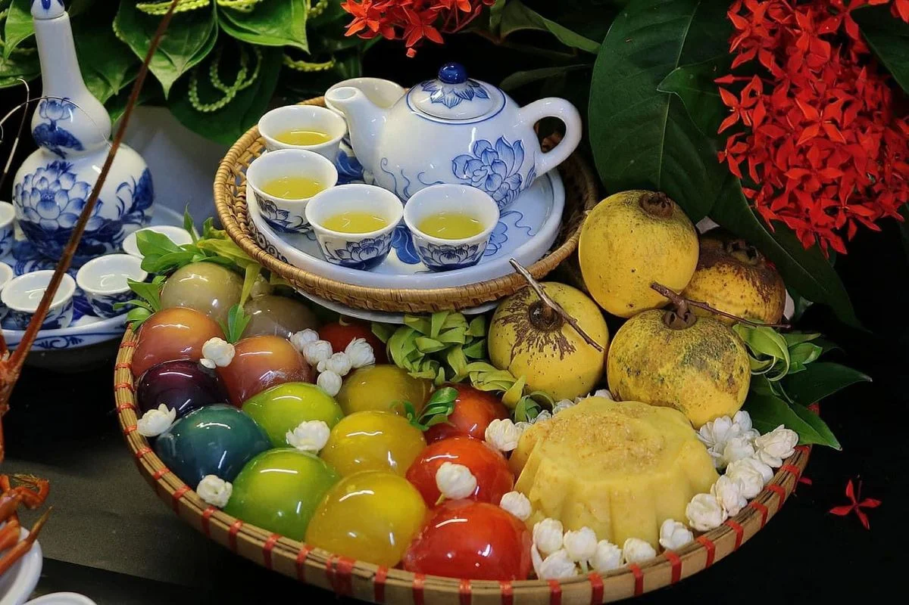
Bánh xu xuê ở miền Trung và miền Nam
Sự biến đổi không chỉ dừng lại ở tên gọi. Trong quá trình thích nghi với điều kiện tự nhiên cũng như khẩu vị của từng địa phương, công thức chế biến bánh cũng có những điều chỉnh nhất định. Nếu bánh phu thê Đình Bảng nổi tiếng với lớp vỏ làm từ nếp, đu đủ xanh và sắc vàng tự nhiên của quả dành dành, thì ở một số nơi khác, người làm bánh linh hoạt thay đổi tỷ lệ nguyên liệu để tạo nên kết cấu phù hợp hơn với nhu cầu thưởng thức. Có nơi tăng lượng dừa nạo để mang lại vị béo đậm đà, có nơi chú trọng tạo độ trong và độ dai rõ nét hơn cho lớp vỏ, cũng có nơi giảm bớt độ ngọt nhằm phù hợp với xu hướng ẩm thực hiện đại. Những điều chỉnh ấy không làm mất đi bản sắc vốn có của chiếc bánh, mà ngược lại còn cho thấy khả năng thích ứng linh hoạt của một sản phẩm văn hóa dân gian trước những thay đổi của đời sống đương đại.
Bên cạnh sự điều chỉnh về công thức, hương vị của bánh phu thê ngày nay cũng trở nên phong phú hơn. Ngoài phần nhân truyền thống gồm đậu xanh, hạt sen và dừa nạo, nhiều cơ sở sản xuất đã phát triển thêm các phiên bản mới như nhân sầu riêng, trà xanh, khoai môn, matcha, đậu đỏ hay kết hợp cùng các loại hạt. Những biến tấu này mang đến trải nghiệm mới mẻ cho người thưởng thức, đặc biệt là giới trẻ và du khách. Dù hương vị có thay đổi, phần lớn các phiên bản vẫn giữ cấu trúc quen thuộc với lớp vỏ dẻo trong bao bọc phần nhân bên trong - hình ảnh từ lâu đã gắn liền với quan niệm về sự gắn kết và hòa hợp trong hôn nhân của người Việt.


.webp)


...
Bánh phu thê ngày nay còn mang những gam màu mới nhằm đáp ứng nhu cầu thẩm mỹ ngày càng đa dạng của người tiêu dùng. Nếu sắc vàng trong từ quả dành dành từ lâu đã trở thành dấu ấn đặc trưng của bánh phu thê truyền thống, thì nhiều nghệ nhân và cơ sở sản xuất hiện nay đã thử nghiệm thêm các nguyên liệu tạo màu tự nhiên khác. Từ sắc xanh dịu của lá dứa, màu đỏ cam của gấc cho đến sắc tím nhạt từ hoa đậu biếc hay lá cẩm, mỗi gam màu đều mang lại một diện mạo mới cho chiếc bánh nhưng vẫn giữ được nét gần gũi với thiên nhiên và tinh thần của món bánh dân gian.
Hình thức đóng gói cũng có nhiều thay đổi theo thời gian. Nếu trước đây chiếc bánh thường gắn liền với lớp lá dong xanh và những sợi lạt hồng buộc thủ công, thì ngày nay người ta dễ dàng bắt gặp những phiên bản được đặt trong hộp giấy mỹ thuật, hộp quà cưới hoặc các mẫu bao bì thiết kế hiện đại. Sự đổi mới này không chỉ giúp tăng tính thẩm mỹ mà còn đáp ứng tốt hơn nhu cầu vận chuyển, bảo quản và biếu tặng trong cuộc sống hiện nay. Thậm chí, để tiếp cận nhóm khách hàng trẻ tuổi, nhiều cơ sở sản xuất còn phát triển thêm các dòng sản phẩm với màu sắc phong phú hơn. Dẫu vậy, bên dưới những thay đổi về hình thức vẫn là phần nhân ngọt bùi quen thuộc cùng ý nghĩa biểu tượng về sự gắn kết của đôi lứa.

Chính khả năng dung hòa giữa truyền thống và đổi mới đã giúp bánh phu thê duy trì sức sống bền bỉ suốt nhiều thế kỷ. Dáng vẻ bên ngoài có thể thay đổi theo từng vùng đất hay từng giai đoạn lịch sử, nhưng giá trị mà chiếc bánh chuyên chở thì vẫn luôn được gìn giữ. Từ cặp bánh mộc mạc trong mâm tráp ăn hỏi của người Kinh Bắc xưa đến những phiên bản được cách tân trong các đám cưới hiện đại, bánh phu thê vẫn kể cùng một câu chuyện về tình yêu, lòng thủy chung và khát vọng xây dựng hạnh phúc viên mãn của người Việt.
Từ thức bánh dân gian đến đến niềm tự hào Kinh Bắc
Từ một thức bánh dân gian gắn với phong tục cưới hỏi, bánh phu thê đã dần trở thành biểu tượng văn hóa của vùng đất Bắc Ninh, đại diện cho bản sắc xứ Kinh Bắc trong đời sống đương đại. Nếu trước đây bánh phu thê chủ yếu xuất hiện trong cưới hỏi hoặc các dịp lễ trọng đại thì ngày nay, bánh phu thê đã trở thành một phần của hoạt động du lịch văn hóa tại Bắc Ninh, là thức quà được nhiều người lựa chọn để dành tặng người thân, bạn bè và đối tác như một cách gửi gắm lời chúc bình an, may mắn và hạnh phúc. Nhiều du khách tìm đến Đình Bảng để tham quan quê hương phát tích vương triều Lý hay tìm hiểu không gian văn hóa Kinh Bắc mà còn để thưởng thức và mang về những cặp bánh phu thê như một món quà mang đậm bản sắc địa phương. Đối với nhiều người, hành trình tìm đến chiếc bánh cũng là hành trình khám phá một lát cắt của văn hóa vùng đất này. Qua từng chiếc bánh, du khách có cơ hội hiểu thêm về những câu chuyện dân gian, những tập tục cưới hỏi truyền thống và cả sự khéo léo của những người thợ đã âm thầm gìn giữ nghề qua nhiều thế hệ. Từ một thức bánh dân gian được làm trong các gia đình, bánh phu thê đã từng bước trở thành một sản phẩm văn hóa đại diện cho địa phương, góp phần quảng bá hình ảnh Bắc Ninh đến với bạn bè trong và ngoài nước.
Có lẽ cũng bởi vậy mà giữa dòng chảy không ngừng của thời gian, bánh phu thê vẫn giữ được chỗ đứng riêng trong lòng người Việt. Không cầu kỳ, không phô trương, chiếc bánh nhỏ bé ấy vẫn âm thầm kể câu chuyện về tình nghĩa vợ chồng, về đạo lý gia đình và về khát vọng hạnh phúc đã được gìn giữ suốt hàng trăm năm. Từ những mâm tráp cưới truyền thống cho đến những món quà mang về sau mỗi chuyến đi, bánh phu thê vẫn tiếp tục thực hiện sứ mệnh của mình: trở thành nhịp cầu kết nối giữa quá khứ và hiện tại, giữa văn hóa dân gian và đời sống đương đại, để những giá trị tốt đẹp của người Việt tiếp tục được lưu truyền trong tương lai.
Không đơn thuần là thức quà trong lễ cưới hỏi
Bánh phu thê từ lâu đã trở thành biểu tượng thiêng liêng của đạo nghĩa vợ chồng - nơi gửi gắm lời thề nguyện về sự đồng lòng, thủy chung và son sắt.
Có lẽ chính bởi những giá trị ấy mà suốt gần một thiên niên kỷ qua, chiếc bánh nhỏ bé này vẫn bền bỉ hiện diện trong những thời khắc trọng đại nhất của đời người.
Từ miền đất Kinh Bắc xưa cho đến những hôn lễ hiện đại ngày nay, bánh Phu Thê vẫn được nâng niu trao tay như một lời chúc phúc vẹn tròn cho hạnh phúc lứa đôi.
"Hộp vuông xếp lá dừa xanh,
Và đây đôi bánh cho anh, cho nàng.
Chúc cho thắm đượm đá vàng,
Sắt son tơ tóc buộc ràng phu thê".
(Bánh phu thê — Bùi Thị Ngọc Diệp)
Mỗi sính lễ trong đám cưới truyền thống Việt Nam đều mang trong mình một thông điệp văn hóa riêng. Với bánh phu thê, đó là triết lý về sự hòa hợp và gắn kết vợ chồng, được gửi gắm tinh tế qua từng lớp lá, từng sợi lạt và cả hương vị của chiếc bánh. Chính vì chứa đựng nhiều lớp nghĩa như vậy mà việc thưởng thức bánh phu thê không chỉ là cảm nhận một món ăn, mà còn là hành trình khám phá những giá trị văn hóa được lưu truyền qua nhiều thế hệ.
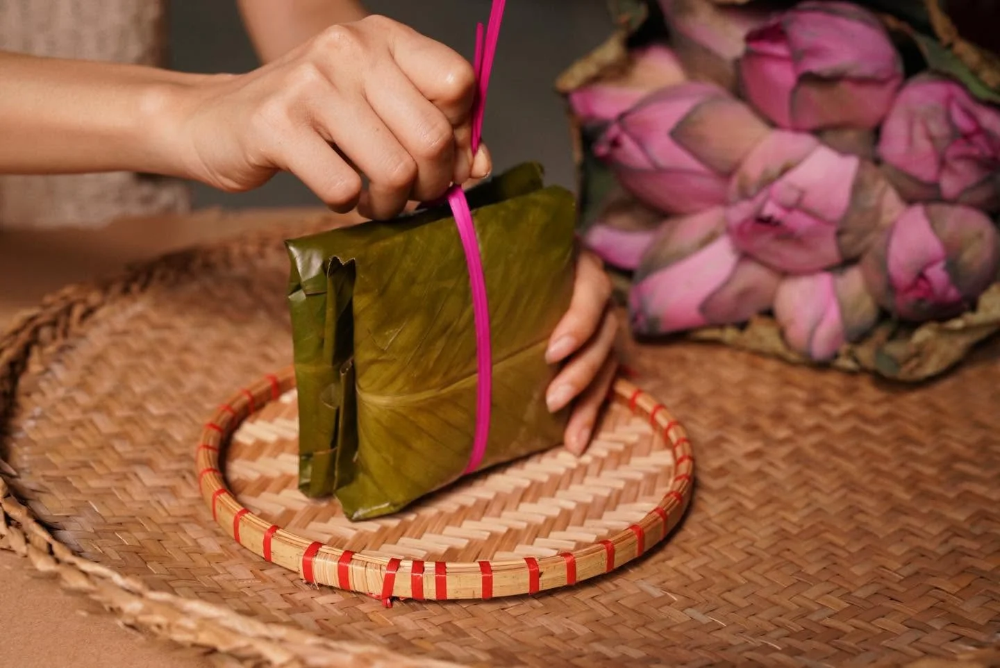
Bánh phu thê Đình Bảng trong công đoạn hoàn thiện trước khi đến tay người thưởng thức.Từ từ tháo sợi lạt đỏ, mở chiếc hộp vuông vức bên ngoài rồi nâng lớp bánh lên tay, người dùng sẽ dần cảm nhận được vẻ đẹp của thức quà truyền thống này. Qua lớp bánh óng ánh là sắc vàng của nhân đậu xanh, màu trắng của dừa cùng hương thơm dịu nhẹ của nếp nhung. Đưa chiếc bánh lại gần, hương thơm dịu nhẹ của nếp quyện cùng mùi thơm bùi của đậu xanh và hạt sen dần lan tỏa. Đó không phải thứ hương thơm nồng đậm, mà là mùi hương nhẹ nhàng như chính tính cách của người Kinh Bắc. Sự hấp dẫn của bánh phu thê vì thế không đến từ cảm giác choáng ngợp, mà từ sự tinh tế được cảm nhận chậm rãi qua từng giác quan.
Khi cắn một miếng bánh, vị ngọt thanh lan tỏa trước tiên nơi đầu lưỡi. Lớp vỏ dẻo mềm được làm từ nếp và đu đủ xanh tạo cảm giác dai nhẹ nhưng không hề dính hay ngấy. Tiếp đó là phần nhân đậu xanh được sên kỹ cùng hạt sen, dừa nạo và đường mía, mang đến vị bùi béo vừa phải. Những sợi dừa nhỏ tạo nên cảm giác sần sật thú vị, giúp hương vị của chiếc bánh trở nên phong phú hơn. Mỗi thành phần đều có dấu ấn riêng nhưng không lấn át nhau, cùng hòa quyện để tạo nên một tổng thể cân bằng và hài hòa.
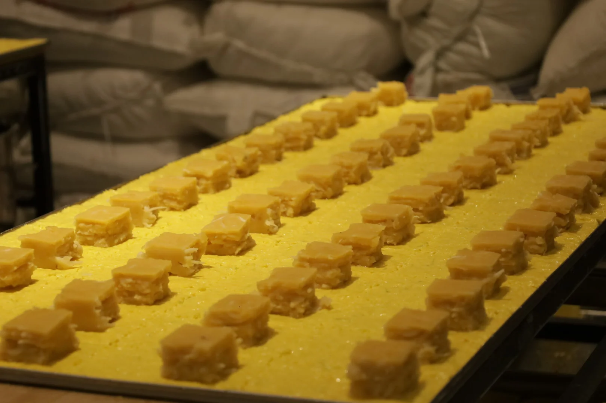
Sự hòa quyện của đậu xanh, hạt sen và dừa làm nên hương vị đặc trưng của bánh phu thê.” (Nguồn: Ngọc Anh)Người xưa thường nói bánh phu thê ngon nhất khi được dùng cùng một chén trà xanh nóng. Vị chát nhẹ của trà làm dịu đi vị ngọt của bánh, đồng thời giúp những tầng hương vị trở nên rõ nét hơn. Sau khi thưởng thức, dư vị ngọt lành vẫn còn đọng lại nơi cuống họng, hòa cùng hương trà thanh mát, tạo nên cảm giác nhẹ nhàng và thư thái. Có lẽ cũng bởi vậy mà bánh phu thê không chỉ xuất hiện trong những mâm tráp cưới hỏi, mà còn trở thành thức quà để người ta ngồi lại bên nhau, nhâm nhi cùng chén trà và trò chuyện trong những dịp sum họp.
Nhưng điều đọng lại sau cùng không chỉ là hương vị. Đó còn là ý niệm về sự gắn kết, về một mái ấm được xây dựng bằng sự đồng lòng và sẻ chia. Bởi suy cho cùng, điều mà người ta trao nhau và cùng nhau thưởng thức không chỉ là một món sính lễ đơn thuần, mà là lời nguyện ước cho một cuộc hôn nhân bền chặt - nơi hai tâm hồn nguyện cùng nắm tay nhau đi qua mọi thăng trầm của cuộc sống.
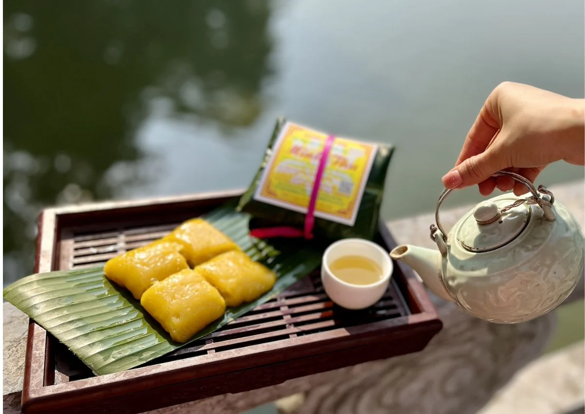
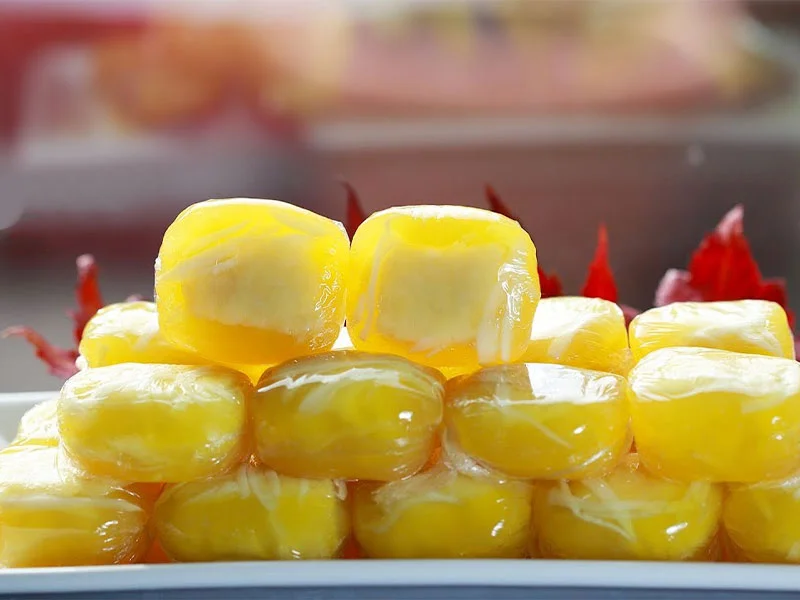
Ngày nay, giữa dòng chảy hối hả của cuộc sống, khi những trào lưu mới liên tục được tạo ra và thay thế nhau với tốc độ chóng mặt, nhiều làng nghề truyền thống đang lặng lẽ đối mặt với bài toán của sự tồn tại. Nghề làm bánh phu thê cũng không nằm ngoài vòng xoáy ấy. Những nếp sống xưa dần đổi thay, những thói quen tiêu dùng mới xuất hiện, khiến khoảng cách giữa con người với các giá trị truyền thống đôi khi trở nên xa hơn bao giờ hết. Thế nhưng, có những điều tưởng chừng mong manh lại sở hữu sức sống bền bỉ lạ kỳ. Ở làng nghề làm bánh phu thê tại Đình Bảng và nhiều vùng quê Bắc Bộ, những nghệ nhân vẫn miệt mài gìn giữ nghề như gìn giữ một phần ký ức của dân tộc. Họ không chỉ làm bánh để mưu sinh, mà còn mang trên vai trách nhiệm lưu truyền một di sản văn hóa đã được cha ông vun đắp qua nhiều thế hệ. Từ việc chọn nếp, đồ đậu, sên nhân, gói lá dong đến buộc từng sợi lạt đỏ, tất cả đều được thực hiện bằng đôi tay và bằng cả niềm tự hào với nghề truyền thống. Mỗi chiếc bánh không chỉ là một món ăn, mà là kết tinh của ký ức làng quê, của phong tục hỷ sự và triết lý sống coi trọng nghĩa tình.
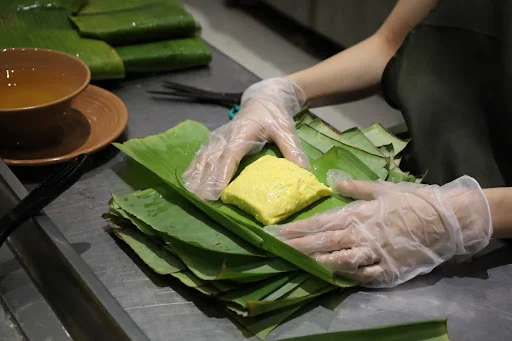
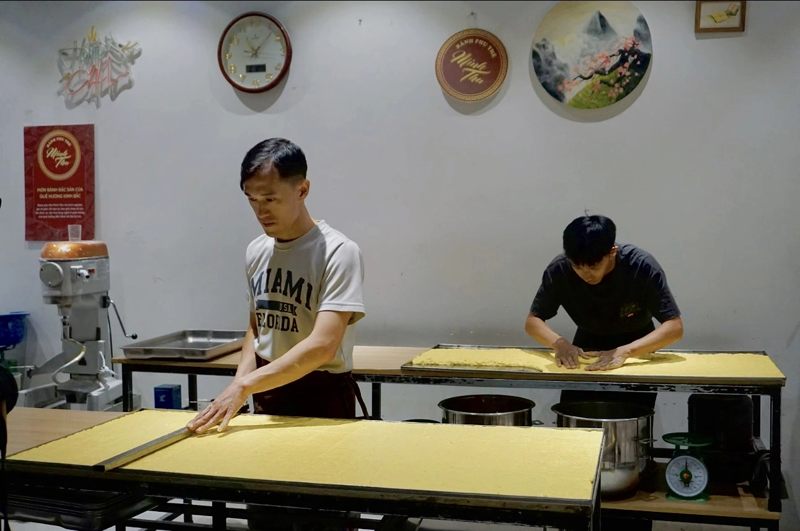
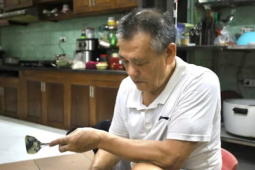

Khi một làng nghề còn đỏ lửa, một chiếc bánh còn hiện diện trong lễ cưới, nghĩa là bản sắc dân tộc vẫn còn được tiếp nối trong đời sống hôm nay. Và có lẽ, chừng nào người Việt còn trân trọng những giá trị của tình yêu chân thành, còn nâng niu hạnh phúc gia đình và còn tự hào về cội nguồn văn hóa dân tộc, chừng đó chiếc bánh phu thê vẫn sẽ hiện diện trong những ngày vui, lễ cưới, những câu chuyện được kể bên mâm cỗ sum vầy. Sắc đỏ của sợi lạt, sắc xanh của lá dong và màu vàng hổ phách của lớp bánh trong veo sẽ vẫn tiếp tục kể câu chuyện kéo dài suốt hàng thế kỷ - câu chuyện về một dân tộc biết gửi gắm triết lý sống vào những điều bình dị nhất, để rồi từ một chiếc bánh nhỏ bé, kết tinh thành biểu tượng của tình yêu, của hạnh phúc và của bản sắc văn hóa Việt Nam trường tồn cùng thời gian.
"Đôi ta như bánh phu thê
Đẹp duyên, vẹn nghĩa, chẳng nề gian nan".
(Thơ ca dân gian)